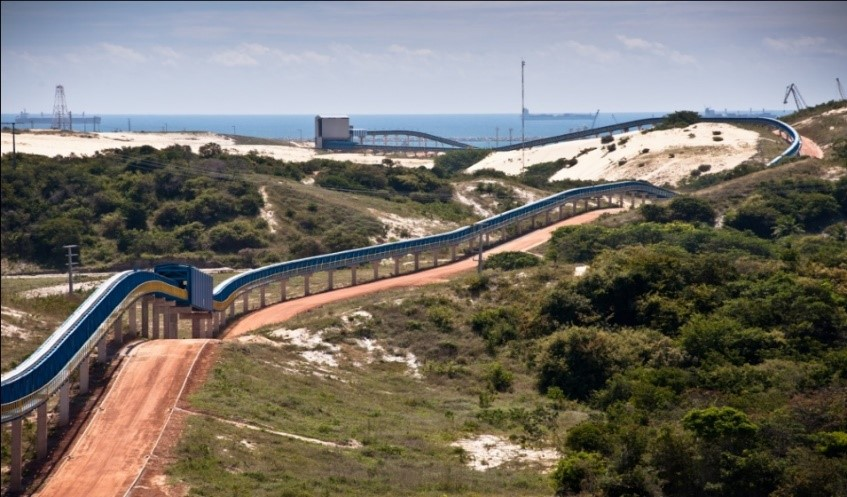
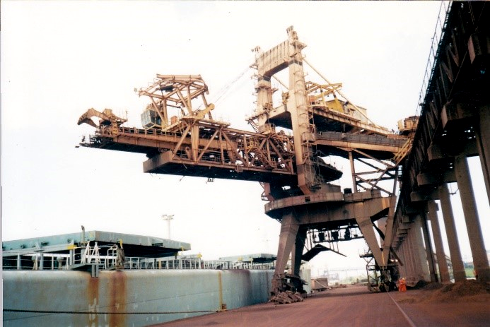
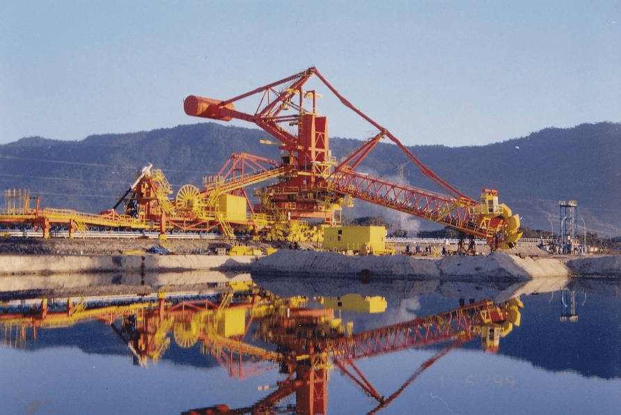
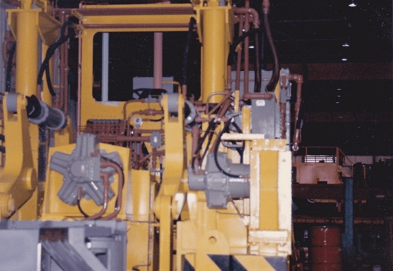
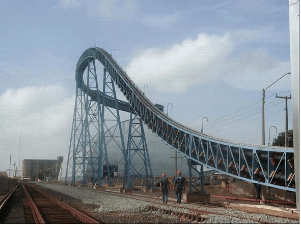
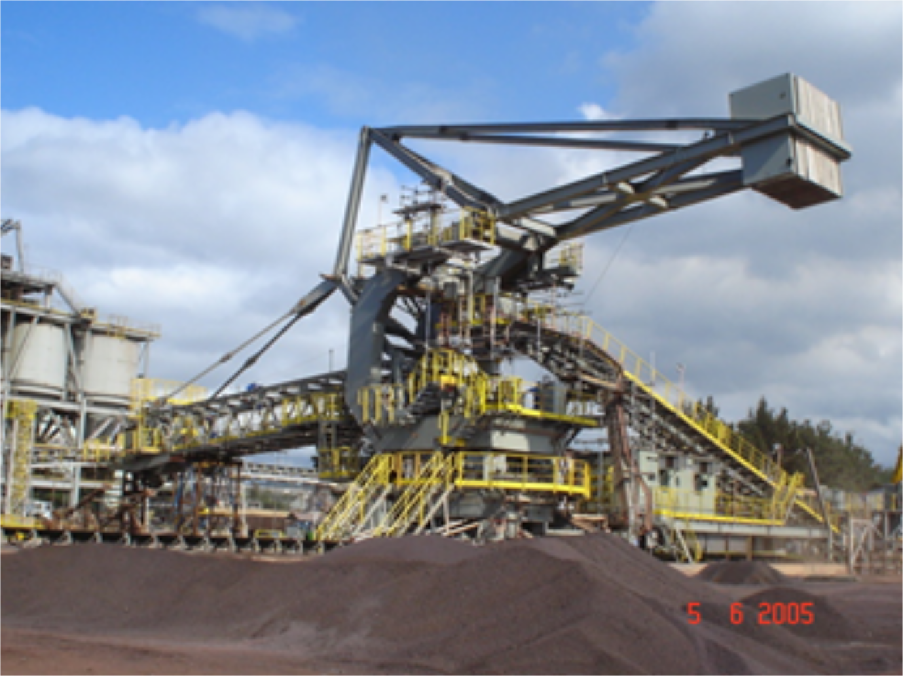

ENENG SERVICE - MÁQUINAS DE ELEVAÇÃO E TRANSPORTE E
TRANSPORTADORES TUBULARES
Avaliação da Vida Útil das Máquinas
A ENENG oferece relatórios detalhados sobre o estado das
máquinas, analisando sua vida útil e custos totais de
propriedade, com recomendações sobre como proceder em caso
de necessidade de modernização ou retrofit.
Retrofit e Upgrade
A empresa propõe modernizações de máquinas com potencial de
aumentar sua produtividade, mesmo quando sua vida útil
parece ter acabado. A modernização inclui também
transportadores de correia, especialmente os tubulares.
Inspeções
A ENENG garante a segurança das operações por meio de
inspeções regulares, avaliando o desgaste das máquinas no
local.
A ENENG se destaca por sua experiência de 31 anos no mercado
brasileiro, com profissionais altamente qualificados,
software de cálculo estrutural desenvolvido internamente e
uma assistência técnica ágil. A empresa também oferece
serviços adicionais como elaboração de especificações
técnicas, coordenação e supervisão de projetos e fabricação,
testes e laudos técnicos.

Responsável técnico pela venda de 20 Km de pipe
conveyor no Brasil (REVAP, PECEM I e II, ITAQUI e
SALOBO).

Projeto, Coordenação Técnica, Supervisão de
Fabricação e Supervisão de Montagem de um Carregador
de Navios de 8000 t/h.

Serviço de Supervisão de Montagem da
Empilhadeira/Retomadora de Sepetiba.

Coordenação Técnica do Manipulador de Lingotes –
Usiminas – Ipatinga (Tropicalização do Projeto
Alliance e elaboração de todos os cálculos).
Serviços de Assistência Técnica de dois Pipes
Conveyor para a Fibria – Jacarei (Compra da nova
correia e Inspeções).
Supervisão na Engenharia e Serviço de Assistência
Técnica no Pipe Conveyor da REVAP.

Coordenação da Engenharia de dois Pipes Conveyors
para o Projeto Sossego Vale – São Luis.

Projeto e Coordenação Técnica de Uma
Empilhadeira/Retomadora 900/750 t/h para a Usiminas.
Serviço de Engenharia e Assistência Técnica, após
acidente da Retomadora na Vale – São Luís.
Laudo Técnico do acidente de Uma
Empilhadeira/Retomadora da Açominas (Atual Gerdau)
em Ouro Branco.
❮
❯